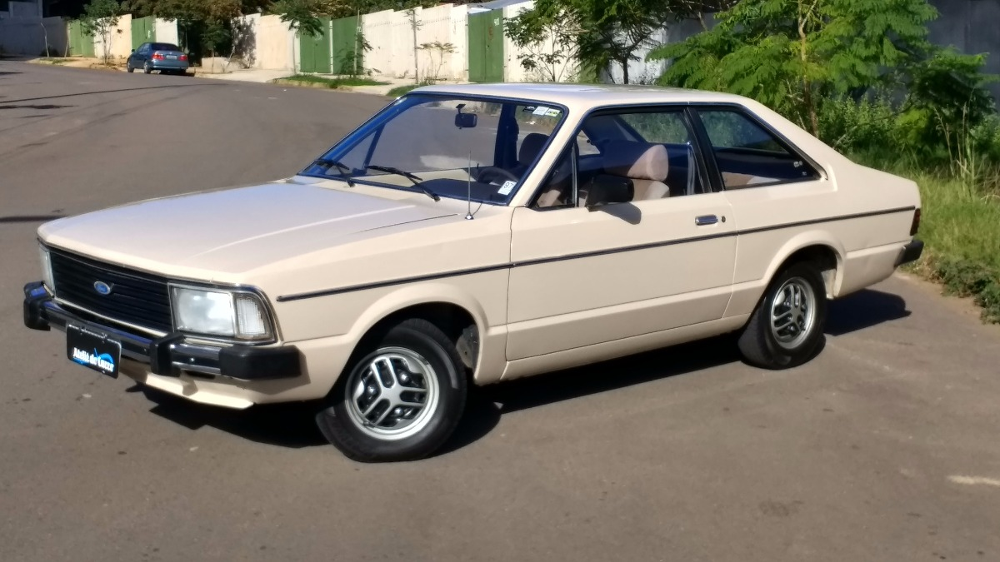

Corcel II
CORCEL II TOP DE LINHA
Quando a Ford adquiriu o controle acionário da Willys Overland do Brasil em 1967, essa última estava desenvolvendo um projeto em parceria com a Renault, o projeto "M". Esse projeto deu origem ao Renault 12 na França e, com uma carroceria diferente, ao Corcel no Brasil.Lançado inicialmente como um sedã 4 portas e a seguir como um coupé, em 1969, o carro foi bem aceito quando de sua estreia em 1968. O espaço interno e o acabamento chamavam a atenção, e as inovações mecânicas eram muitas, bem mais do que as de seu concorrente direto, o Volkswagen 1600 TL.